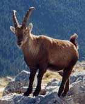

pointe de la Terrasse (2881 m)

Départ : la Fauge (1790 m)
Aller : xx km, +1091 m, xx min
Retour : xx km, - 1091 m, xx min
Difficulté : EE
Période : juillet - septembre
Remarque : la carte Top 25 3532OT est nécessaire.
Bibliographie : Mérel (page 157)
Laisser les voitures sur la route et descendre à La Fauge pour prendre le sentier du tour du Beaufortain. Le remonter jusqu’à une prise d’eau à 1999. Le quitter alors pour prendre à G une sente mal balisée qui remonte dans l’herbe, et traverse un replat (2120 - 2200 m) avant d’atteindre le Passeur de Pralognan, avec un dernier passage taillé dans la barre.
Le sentier monte sous la pointe de Pralognan (herbeuse, E), puis sous l’antécime 2844, et gravit un couloir pierreux puis l’arête finale.
Retour même itinéraire.
Très belles vues sur les 5 lacs.